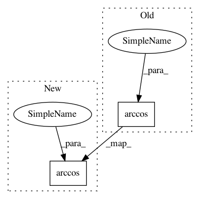

7e7af258ed569a96894941059184e5271853e070,pyntcloud/geometry/coord_systems.py,,cartesian_to_spherical,#,46
Before Change
theta = np.arctan2(y, x)
phi = np.arccos(z / r)
if degrees:
theta = np.rad2deg(theta)
phi = np.rad2deg(phi)
After Change
radius = np.nan_to_num(np.sqrt((x * x) + (y * y) + (z * z)))
inclination = np.nan_to_num(np.arccos(z / radius))
azimuth = np.nan_to_num(np.arctan2(y, x))
In pattern: SUPERPATTERN
Frequency: 3
Non-data size: 2
Instances
Project Name: daavoo/pyntcloud
Commit Name: 7e7af258ed569a96894941059184e5271853e070
Time: 2018-04-09
Author: daviddelaiglesiacastro@gmail.com
File Name: pyntcloud/geometry/coord_systems.py
Class Name:
Method Name: cartesian_to_spherical
Project Name: lmcinnes/pynndescent
Commit Name: e99b07084b71b824128577586fb87c136755608d
Time: 2021-01-14
Author: leland.mcinnes@gmail.com
File Name: pynndescent/distances.py
Class Name:
Method Name: true_angular_from_alt_cosine
Project Name: pymanopt/pymanopt
Commit Name: 9e9a63cba82546403db5b5aa55d8a8627b8acbe2
Time: 2016-02-23
Author: jamiehntownsend@gmail.com
File Name: pymanopt/manifolds/sphere.py
Class Name: Sphere
Method Name: dist